The latest version of this document can be found at https://raboof.github.io/AlgoScore/algoscore-manual.html
AlgoScore is a graphical environment for algorithmic composition, where music is constructed directly in an interactive graphical score. This section gives an introduction to the features and concepts of AlgoScore.
AlgoScore is free software and a project under active development, distributed under the terms of GNU General Public License.
Graphical objects are placed in a timeline and connected together. Some objects are user-interactive and depend on user data, while some are generative and react on input from other objects. Each individual object also has a set of user-editable properties.
Each object can have many inputs and outputs, and the outputs can be connected to multiple objects and inputs. Different objects can also be used as input at different times. This allows the creation of complex networks where graphical objects react on each other. Since the objects exists in a timeline, this network is not static but can change over time.
Objects can visualize their data directly in the score, which is a helpful aid in the process of algorithmic composition. When the composer changes a connection, moves an object, or alters some property of an object, the resultant change is immediately updated in the visual representation.
The kind of data sent between objects (and visualized by objects) is mostly either discrete events with arbitrary parameters, or continuous numerical control data as an array of values or as interpolated break-point curves. But any kind of data can be sent: strings, vectors, tables, or even functions or references to other objects.
Since the composer works directly with the score, there's no need for an additional step of creating a graphical score of the piece. The score is already there, and can be exported to PDF for printing or publishing, or SVG for importing into other applications.
AlgoScore has a non-realtime perspective, where the composer can relate freely to time and construct the composition outside of time. This makes AlgoScore more like a traditional sequencer in this regard, but a graphical algorithmic sequencer with powerful and flexible scripting abilities.
The non-realtime concept also means that an object has the ability to access all data of another object in a single moment, instead of beeing limited to the streaming data of a current "now". Both the composer and the individual objects are thus unbound by time and can relate to both past and future.
The data can be output from AlgoScore by connecting objects to one or more special output busses. The result is output as audio (through the built-in Csound interface), arbitrary control signals, OSC (OpenSoundControl), or MIDI.
The csound bus takes events, control data and function tables from other objects and sends them to csound, which renders it to audio in a background process according to a given orchestra file. The audio can then be played back through JACK Audio Connection Kit, or exported to a soundfile. Playback can be started before the rendering is finished, much like when streaming media on the web.
The control signal bus takes any numerical data, samples it in a specified samplerate, and sends it on a JACK port as an audio signal. This gives the possibility of high-resolution control of other software.
The OSC bus takes events and outputs them to specified address and OSC paths.
The MIDI bus takes note events and control data and sends it on a JACK midi port.
AlgoScore is highly customizable and extendible with the Nasal scripting language.
It's relatively easy to make your own classes (types of objects) from scratch or derived from an existing class, and there are also classes that allow the composer to use nasal code directly in the score for generating or transforming events or control data. Each connection also has a transfer func property, allowing the data to be transformed according to nasal code (a simple mathematical expression, for example). There is also classes with similar features.
The advanced user can build their own library of custom classes and functions. It's easy for users to share classes with each other, just put the file in your user_data folder and it will be loaded automatically. Since the classes are written in an interpreted scripting language, no compilation-step is needed.
Actually, most of AlgoScore is written in Nasal, with a core written in C. AlgoScore has a built-in Nasal interpreter that can be used to access the score and objects programatically, or even create your own GUI applications from scratch.
AlgoScore has been tested on GNU/Linux and Mac OS X, but should probably be compilable on other POSIX conformant operating systems as well.
AlgoScore is free software and is released under the terms of GNU General Public License. Sourcecode and binary packages are available at http://kymatica.com/algoscore
There is no need to install AlgoScore to a specific location, it's a self-contained application directory.
See the ChangeLog for recent changes.
Since version 080417 the pre-built binary was removed, you need to build AlgoScore from source. (see below)
Make sure you have the dependencies listed above installed. Note that on a distro with separate dev-packages you need to install those too.
You also need to install CMake 2.4.7 or later.
Download the source package and unpack it somewhere, then do the following in the shell:
cd AlgoScore/src export CFLAGS="-O2" ./make_build
The "-O2" compiler flag is needed to avoid a crash due to a compiler bug.
If you want to make a clean rebuild, remove the old build folder first.
Start AlgoScore by running the algoscore binary
from within the top-level directory of the AlgoScore folder. It is important
that the binary is not moved from this location for AlgoScore
to find the included library files. You can go to the AlgoScore folder and run it
from there, or enter the full path, but you can not run it through a symlink.
If you're using ROX-Filer, you should be able to start AlgoScore by just double-clicking it, and it will try to compile itself the first time.
The first time you start AlgoScore, it will notify you that a folder for custom userdata
was not found and offer you to create one. The default location for this is
algoscore_data under your home folder.
On OS X, the simplest approach is probably to download the pre-built AlgoScore.app application bundle.
If you need or want to compile from source on OS X, see this section at the end of this document.
You should install JackOSX after Csounds SupportLibs package, since csound will overwrite your current jack library otherwise.
Note that X11 is no longer needed.
Start Jack (through JackPilot) and then AlgoScore.
The first time you start AlgoScore, it will notify you that a folder for custom userdata
was not found and offer you to create one. The default location for this is
algoscore_data under your home folder.
TODO Simple "hello world" tutorial. Pointers to examples in appendix?
You might want to take a look at Using AlgoScore. Also take a look at the Examples.
This section gives a detailed view of the user interface and the most important actions, like creating and connecting objects and editing their properties.
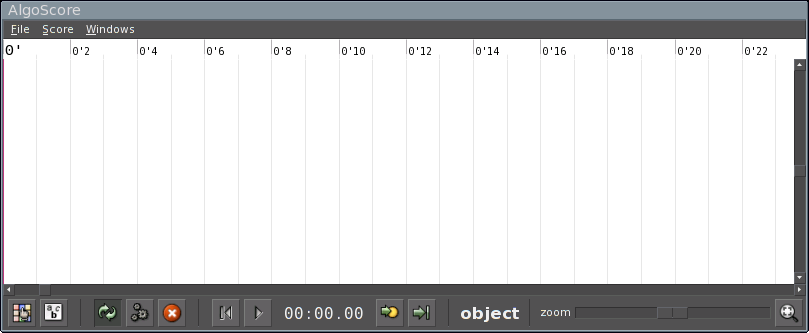
This is the main AlgoScore window. The white area with the timeline and grids is the (now empty) graphical score.
Many actions work by the concept of soft selection, this means that an action is initiated by pressing a key or clicking a mousebutton while pointing the mousecursor over the object that should be affected.
At the top of the window is the menu where various actions can be performed, like opening and saving projects, exporting busses to audio, printing to PDF, etc...
At the bottom of the window is the toolbar. It has buttons to do various actions (some of which is also available in the menus), a time display of the current play position, the tool-mode display (here object) and the zoom-control. Holding the mouse cursor over the buttons shows a tooltip with a description of what that button does.
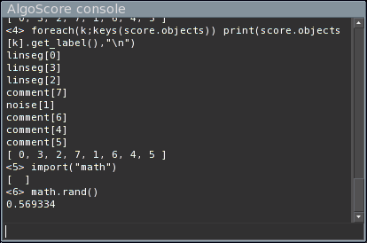
This is the console, available on the Windows->Console menu.
It has a text area that display information and error messages, and a command line where one has access to the built-in nasal interpreter. This can be used for scripted access to the score and objects, evaluating nasal expressions, or running external nasal scripts.
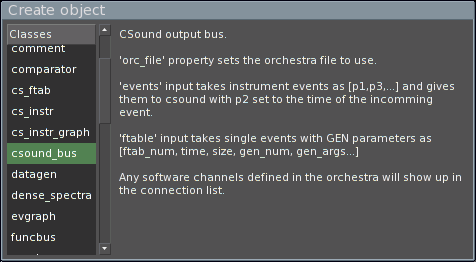
It is important to understand the concept of classes and objects. Objects are created from object templates, called classes. A class defines a kind of object (like a rectangle, a circle, etc...), and an object is an instance of its class (that rectangle, that circle, etc...).
To create an object, right-click on the score area or press n. The above window will show up, displaying the list of available classes to the left and the currently selected class description to the right. Double-click on the class to create an object of that class.
The objects can be moved around by dragging them with button1 (the left mouse button). Hold shift while dragging to move in vertical direction only, ctrl for horizontal direction only.
To copy an object, press c to enter copy mode and then drag the object.
To delete an object, press delete or backspace while dragging the object.
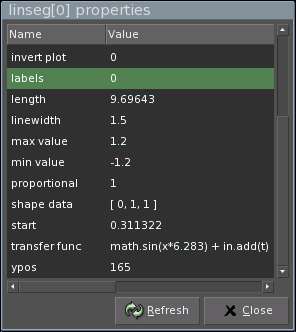
Pressing p while holding the mouse cursor over an object brings up the properties window for that object, where you can inspect and edit the properties of the object.
Typical properties are start time, length, vertical position, but each class defines their own available properties. Some classes uses properties for user-data, for example a vector of numbers to describe a curve.
Pressing p over an empty score area brings up the properties for the score.
To connect two objects, press . or right-click on the source-object. This brings up a menu of available outputs (1), choose the output and then click on the target-object (2), this brings up a menu of available inputs (3), choose the input. Done! (4)
(1):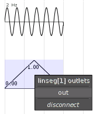 (2):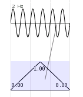 (3):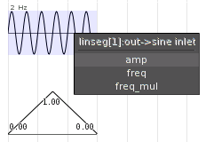 (4):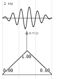
The connections can be moved by dragging them with the left mouse button. Note that the graphical placement of connections has no meaning other than visually. It's the position of the objects themselves that has meaning.
Connections also has properties, these are accessed by pressing p over a connection.
Each connection has a transfunc property that can be used to process
values through a Nasal expression. The variable x in the expression holds
the original value.
For example, to clip the value to -1 and +1: math.clip(x, -1, 1).
Or to transpose a note event before going to a MIDI bus: [x[0]+7,x[1],x[2]].
Note that you can have multiple connections from the same outlet, with different
transfer functions, going to different destinations. One might for example
extract only the velocity element from a note event and scale it to 0-1 and
send it to another object: x[1]/127
There are also object classes with a transfunc property, like all classes
based on ASPlotObj. (linseg, jitter, sine, etc...)
An object can be aligned to another object according to the objects alignmentpoints. This is often only the start and end of an object, but some objects has more than these two alignmentpoints.
Alignment can be done as a single action, or as a permanent link. Links are visualized as dotted vertical lines between objects. Linked objects will follow each other in the time-direction when one of them is moved.
Pressing a enters align mode, all objects will then show their alignmentpoints visually.
Drag with button1 from an alignmentpoint in one object to one in another object, this will move the first object so that the alignmentpoints occur at the same time. Hold alt to resize the first object so that it ends at the alignment.
Drag with button3 to align and also create a permanent link between the objects. alt works with links too, for resizing.
Hold shift and drag with any button to remove a link between objects.
Hold control and drag to only create a link without aligning first.
Double-clicking or pressing e on an object in object mode tells the object to initiate user editing. Some objects will show some special editing window, while some enters interactive editing mode where they will respond to key and mouse events in the score. If the object does not support any editing, nothing will happen. (This usally means that user-input is done through object properties instead).
If the object uses a special editing window (for example datagen, code
and comment objects), the tool mode will go back to object mode directly
after the editing window has been presented.
If the object supports in-score interactive editing, the object will show a thicker outline in a different color to indicate that it's in edit mode. Clicking on another editable object changes edit mode to that object, and pressing escape or clicking on the score background exits edit mode. All other events on the object is handled by the object.
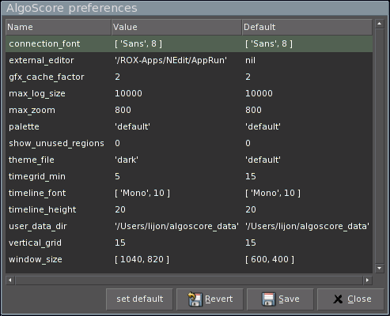
This is the main preferences, accessed at File->Preferences on the menu.
They are saved to .algoscorerc in your home folder.
TODO: Go through each option...
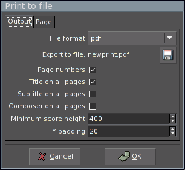
File->Print to file on the menu brings up the print to file dialog. AlgoScore can
export to PDF, PostScript or SVG which can then be published on the web or printed to
paper with another application. Title, subtitle and composer can be set with the score
properties.
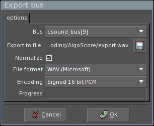
To export a bus to an audiofile or midifile, choose File->export bus on the menu.
You can then choose the wanted format, encoding and filename.
This section describes the key and mouse actions available in the score window.
In this text, button1 refers to the left, button2 to the middle and button3 to the right mouse button.
On OS X, command-button1 is the same as button3 (right-click).
The current tool mode is shown in the status bar. Change tool by pressing the corresponding key:
| o | object mode |
| a | align mode |
| c | copy mode |
| i | insert mode |
Object mode is the default one and other modes will go back to this after any action is done.
| home | scroll to start |
| 1 | fit all |
| + | zoom in |
| - | zoom out |
| L | toggle object labels |
| O | toggle object outlines |
| U | toggle delay update |
| E | set endmark to current pointer position |
| b | add new page break at pointer position |
| 0 | locate play cursor to start of score |
| enter | locate play cursor to current pointer position |
| space | toggle play/stop |
| button2 drag | pan view |
| delete or backspace | delete object, connection or marker while moving it. |
Additionally these actions are available on menu's:
| ctrl-u | perform all pending updates |
| ctrl-k | stop background updates |
| alt-e | set endmark to end of last object |
| ctrl-o | open file |
| ctrl-s | save file |
| ctrl-n | create new project |
| ctrl-p | print score to file |
| ctrl-q | quit |
| alt-l | bring up console log window |
| button1 drag | move objects |
| shift-button1 drag | move in vertical direction only |
| ctrl-button1 drag | move in horizontal direction only |
| alt-button1 drag | resize object |
| n or button3 | on score background to create a new object |
| . or button3 | on object to make connection |
| p or ctrl-double-click | on object, connection, or score background to show and edit properties |
| u | on object to update only that object |
| e or double-click | on object to make it editable. See edit mode for details. |
| I | on object to inspect it: shows detailed low-level information. |
| button1 drag | between alignmentpoints (from one object to another) to align first object. |
| alt-button1 drag | resize the first object so that it ends at the alignment. |
| button3 drag | align and create a permanent link. |
| alt-button3 drag | resize and create a permanent link. |
| shift-button1 drag | remove a permanent link between objects. |
| ctrl-button1 drag | only create a link without aligning first. |
Moving objects as in object mode, but creates a copy of the object.
Drag with button3 to create a ghost copy: an object that is an alias for the source object and will have its own position and length, but inherit all other properties from the source object. [This feature is still experimental]
Objects using a special editing window will present it and then go back to object mode.
Objects supporting in-score interactive editing shows a thicker outline in a different color.
Click on another editable object to change edit mode to that object.
Press escape or click the score background to exit edit mode.
All other events on the object is handled by the object.
Drag with button1 to move all objects which are to the right of the mouse cursor in the time-direction.
This section gives an overview of the ways of getting output from AlgoScore. This is done through special output busses. There is currently a Csound bus, a control signal bus, an OpenSoundControl bus, and a MIDI bus class available.
AlgoScore can use Csound to produce sound which can be played back through
JACK or
exported to an audiofile. It interfaces to Csound through objects of the
csound_bus class. Each csound_bus object is an instance of Csound.
After you created a csound_bus you should give it an orchestra file. This is done by
setting the orc_file property on the bus. You need to use an external editor to create
and edit the orchestra file. The csound orchestra syntax is beyond the scope of this
manual, see http://www.csounds.com for tutorials and more information on csound.
The orchestra file is searched in the current folder or the folder where the project is saved. It's recommended that you start by saving the project in a folder so you know where to place the orchestra file.
If you edit the orchestra file you need to press u on the csound bus to make it reload the orchestra, since AlgoScore won't know about things you do with an external text editor.
You can set your favorite text editor in the Preferences, pressing e on the csound bus will then bring up the orchestra file of that bus in the editor.
The csound bus has inlets for events and ftabs. Also all software channels
exported from the orchestra by the chnexport opcode will show up here,
allowing k-rate control of global variables in the orchestra.
You can use cs_instr or cs_instr_graph objects to send single
instrument events, or use nasal code in datagen objects to generate
them algorithmically.
The event data expected on the events input should be in the form [p1, p3, ...].
Note that p2 (start time) is skipped since it's already in the AlgoScore event. The
full AlgoScore event format would be [p2, [p1, p3, ...] ].
Each csound bus will create a corresponding JACK output port for each channel (as defined
by nchnls in the orchestra). AlgoScore will try to autoconnect these ports to the
default soundcard of the system. This might not work on OS X, then you need to manually
connect them in the JACK router.
Currently, the sample rate of csound (sr in the orchestra) must be the same as
JACK!
Each change that affects the csound bus will make it start rendering audio, this is visualized by a red transparent bar. You can start playing the audio before it has finished, but if the play position reaches the non-rendered area of the bus, playback will be silenced.
With a complicated orchestra and many events, rendering can be slow. To avoid that each
little change in the score triggers the rendering, you can set the delay_update
property of the csound bus to 1. You can now make multiple changes, and press Ctrl-U to update all
objects that are waiting for an update, or u on a single object to update only that
one. All objects in need of update will be seen with the transparent red bar.
To export a csound bus to an audiofile, choose File->export bus on the menu.
The signal_bus samples the incoming numerical values at a given division
of the JACK sample rate, the divisor is set by the sr_div property. The data is
then upsampled and sent as an audio stream on a JACK signal port.
Any application or DSP environment that can take input from JACK can thus be controlled by AlgoScore, for example PureData, SuperCollider, ChucK, Max/MSP.
A signal bus can also be exported as an audiofile, including raw (headerless) float data which might be suitable for importing in other applications.
The osc_bus class creates OpenSoundControl bus objects. Each OSC bus has
an osc_address property that takes an URL of where to send the messages,
default is 'osc.udp://localhost:7770'.
The controllers property has a table of inlets and their OSC path and
typetag string. Example:
{ note: ['/foo/note', 'iff'],
foo: ['/foo/bar', 'f' ] }
If any interpolating output (for example a linseg or jitter object) is connected
to the OSC bus it samples them at the interval specified in the resolution
property of the bus.
See the description of osc_bus for details.
The midi_bus class creates MIDI bus objects. Each MIDI bus creates a
corresponding JACK midi port (Needs recent version of JACK).
The JACK midi ports can then be connected to other software or external hardware for control of synthesizers or other devices.
Each MIDI bus has properties for channel and JACK port name, and a list of controllers. It supports 7 and 14 bit controllers, pitchbend and note events.
See the description of midi_bus for details.
Compile and evaluate nasal code.
Properties:
eval_once |
- if 0, the code will be evaluated each time a receieving object asks for a value. |
Outlets:
value |
- outputs the returned value from the code. |
func |
- outputs the compiled function. |
The code runs with the following variables available:
math |
- the math library (sin, pow, mod, etc...) |
G_set(sym,val) |
- set global variable. |
G_get(sym) |
- get global variable. |
Place a text comment in the score.
If marker in score property is set, a vertical gridline is drawn at the left edge of the object.
Compare two numerical inputs.
min and max properties sets the output value for when the in input is below or above the tresh input.
resolution property sets sample interval in seconds.
Single event CSound function table generator/visualizer.
To be used with the csound objects ftable input.
The start time of this object is ignored.
parms is a vector of f-statement parameters, like [1,0,1024,10,1] for a single sinewave cycle in ftab #1.
If set to a single element vector, it does not send any event but only visualizes the specified function table.
Single CSound instrument event.
p2 (time) and p3 (duration) is taken from the position and length of the object.
instr property sets the instrument number.
parms property is a list of instrument parameters, starting with p4.
If in(X) is used instead of a numeric parameter in this list, an inlet named X will be created and used to initialize that parameter.
Example: [100, in('A'), 1] will set p4 to 100, p5 to the current value at the inlet A and p6 to 1.
Single CSound instrument event.
p2 (time) and p3 (duration) is taken from the position and length of the object.
instr property sets the instrument number.
parms property is a list of instrument parameters, starting with p4.
If in(X) is used instead of a numeric parameter in this list, an inlet named X will be created and used to initialize that parameter.
Example: [100, in('A'), 1] will set p4 to 100, p5 to the current value at the inlet A and p6 to 1.
The graphs property is a hash like this: {amp:{fill:1, lw:1, max:1}, foo:{fill:0, lw:2, max:100}}
The keys specifies what outvalue-channels to plot, fill tells if the graph should be filled or not, lw is linewidth and max the maximum value.
The values should be sent from the orchestra with code like this:
ktrig metro 50
if ktrig == 1 then
outvalue "tag", p1 ; needed to identify the event
outvalue "amp", k1
outvalue "foo", k2
endif
CSound output bus.
orc_file property sets the orchestra file to use.
events input takes instrument events as [p1,p3,...] and gives them to csound with p2 set to the time of the incomming event.
ftable input takes single events with GEN parameters as [ftab_num, time, size, gen_num, gen_args...]
Any software channels defined in the orchestra will show up in the connection list.
Generate data or events with nasal code.
The code runs with the following variables available:
length |
- the length of the object. (read-only) |
in |
- a table of functions f(t) to get value from input at time t, named after the inputs specified in the aux_inputs property. example: x = in.A(t); |
out.resolution |
- sample interval, or 0 for event-data. |
out.interpolate |
- 1 to interpolate between values. |
out.data |
- the output data, initialized to [] |
math |
- the math library (sin, pow, mod, etc...) |
inlets |
- direct access to inlets, for use of Inlet.get_connections() and such. |
G_set(sym,val) |
- set global variable. |
G_get(sym) |
- get global variable. |
Multiple outlets may be specified in the outlets property. They will be available just like 'out' above but named accordingly.
Plot discrete events.
events input takes events in the format [val1, ...]
Properties:
y_parm |
- what element of the event should describe the vertical position of the event. |
y2_parm |
- what element of the event should describe the vertical end-position of the event. |
dur_parm |
- what element should describe the length of the event. |
black_parm |
- what element should describe the opacity of the event. |
size_parm |
- what element should describe the size of the onset marker. Use size_scale to scale it. |
grid |
- y-space division. |
Process inputs through nasal code.
The code runs with the following variables available:
in |
- a table of functions f(t) to get value from input at time t, named after the inputs specified in the aux_inputs property. example: return x * in.A(t); |
t |
- time of the value asked for by the receieving object. |
ev |
- the value of the 'event' inlet at time t. |
x |
- ramp from 0.0 to 1.0 along the length of the object. |
outlet |
- the name of the outlet asked for by the receieving object. The available outlets are specified in the outlets property. |
length |
- the length of the object. |
math |
- the math library (sin, pow, mod, etc...) |
init |
- 1 at first eval after update. |
G_set(sym,val) |
- set global variable. |
G_get(sym) |
- get global variable. |
If a destination object asks for an event by index, t will be set to the corresponding event of the 'event' inlet, both in the t variable and in the returned event. The 'ev' variable will then hold the actual value of the event. This can be used to synthesize events by combining multiple sources or expressions.
Plot incomming numerical data.
Random line-curve.
min duration and max duration sets default min and max duration in seconds. Can also be controlled with mindur and maxdur inlets.
time_randomizer and value_randomizer sets the code used to get random numbers. aux inputs are available as in, current time as t and last value as last.
User defined break-point curve.
shape data property is in the format [val1, time1, val2, time2, val3, ...]
if proportional is zero, times are in seconds, otherwise relative each other and fitted into the object length.
Like linseg but with min/max curves.
Like shape but with min/max curves.
Output MIDI to JACK or midifile.
Properties:
port_id |
- name of the JACK midiport. |
channel |
- MIDI channel. |
controllers |
- table of CC names and their number, like {mod:1,vol:7}. Add 1000 to the number to make it send 14 bit controllers instead of 7 bit. |
resolution |
- resolution of interpolated inputs. |
Inputs:
note |
- note events in the format [pitch, velocity] or [pitch, velocity, duration]. |
pitch |
- numerical input in the range -1.0 to +1.0 for pitchwheel events. |
raw |
- events of raw midi bytes, like [0x90, 60, 100]. |
All CC's defined in controllers shows up as inputs, and takes numerical data in the range 0.0 to 1.0.
Morph between two inputs
Vectors and hashes are handled recursively.
Vectors must have the same structure.
Any keys in one hash that are missing in the other are copied.
If the type of A is not the same as B, the value of A will be returned.
The interpolator property defines the function used for interpolating between numeric values.
The code runs with the following variables set:
a |
- The value of input A. |
b |
- The value of input B. |
x |
- The value of input x if connected, else a ramp between 0.0 and 1.0 along the length of the object. |
Random LFO.
Inputs:
max |
- upper value limit. |
min |
- lower value limit. |
Properties:
seed |
- initial random seed. |
randomizer |
- the code used to get random number. aux inputs are available as in, current time as t and last value as last. |
out.resolution |
- rate in seconds. |
out.interpolate |
- 0 for stepped values and 1 for interpolated lines between values |
Output OSC (OpenSoundControl) messages.
Properties:
osc_address |
- destination URL, like 'osc.udp://localhost:7770' |
resolution |
- resolution of interpolated inputs. |
controllers |
- table of inlet names and their path and typetag string, like {freq:['/something/freq','f']} |
When the typetag string is a single letter, the inlet expects a single value, otherwise it expects a vector with corresponding types.
Type tags:
| f | - float |
| i | - 32 bit integer |
| d | - double |
| c | - 8 bit integer |
| s | - string |
| S | - symbol |
| m | - string of 4 midi bytes |
Receive data from the Send object that are sending on the same symbol.
Send data to all Recv objects that are listening on the same symbol.
Simple ramps between values.
shape data property sets the sequence of values, which are evenly spaced along the length of the object.
Send raw float values through a JACK signal port.
The sr_div property sets the control rate as a division of the sample rate, as queried from the JACK server.
Sinewave LFO.
Inputs:
freq |
- set frequency. |
freq_mul |
- scale the frequency. |
amp |
- scale the amplitude. |
Properties:
out.freq |
- default frequency when freq input is not connected. |
out.amp |
- the initial amplitude. |
out.resolution |
- the sample interval in seconds. |
A simple graphical slider.
Timegrid with alignmentpoints and controllable tempo.
This section will cover information for advanced usage of AlgoScore like internal workings, baseclass and library references, etc...
TODO updating and dependency tree, redrawing, etc..
There are two ways data is stored in objects:
outlet.resolution.
[t,value]. This mode is
indicated by setting outlet.resolution to zero.
The actual values can be of any type.
A destination object can use connection.get_resolution() to get the value of outlet.resolution.
There are two ways for an object to get data from another object. One is to get the current value at time t, the other is to get events by index i.
The convenient way of getting value by time is by first creating a getter function for the specified inlet:
inlet = me.inlets["my_inlet"]; getter_func = inlet.val_finder(default_value);
The value of inlet at time t can then be retreived
by calling getter_func(t). t is counted in seconds from the start of the destination object.
What this does behind the scenes is to find the relevant connection at time t
and then getting the value at time t from this connection by calling connection.get_value(t).
Overlapping source objects overrides previous ones.
The way of getting events by index is by first getting a list of the connections of a specified inlet and then looping through them and getting each event:
inlet = me.inlets["my_inlet"];
connections = inlet.get_connections();
foreach(con; connections) {
for(i=0; i<con.datasize; i+=1) {
ev=con.get_event(i);
...
}
}
Getting events by index means that it's possible to handle overlapping source objects and multiple events with the same onset time.
connection.get_value(t) and connection.get_event(i) calls source_obj.get_value(outlet,t)
and source_obj.get_event(outlet,i). These methods can be overridden by subclasses, the default methods
fetches data from the outlet.data vector.
The outlet.interpolate flag indicates if the outlet contains data that is interpolatable,
which means that a get_value(t) where t is between two events or samples will interpolate the returned value
through source_obj.interpolate(outlet,a,b,x). This flag is available through connection.get_interpolate().
The interpolate flag should be set for curve-like continous data, and unset for discrete events like csound or midi note events. Many objects look at this flag to determine if it should get event by index or value by time, for example the OSC bus.
See documentation for Inlet and Connection classes for more information.
TODO user_data_dir for custom classes and libs, general guide-lines for writing your own classes, with pointers to the subsections below...
The current score object is available as score in the console or
me.score in classes.
A table of all objects in the score, indexed by numerical ID.
Create object from class class_name.
Convert time in seconds to pixel position according to current zoom.
Convert pixel position to time in seconds according to current zoom.
Update all objects.
all |
- all objects if 1, otherwise only pending updates. |
list |
- list of objects if not nil, otherwise all objects. |
force |
- also objects with delay_update set. |
Get a list of all objects (or the ones in list)
sorted according to their dependencies.
Generate a textual string that will create the current score with all objects if compiled and run as nasal code.
Save the current score to file.
Load a score from file.
Make multiple copies of an object.
id |
- the object ID. |
n |
- numer of copies. |
dt |
- amount of time each copy should be offset, defaults to objects length. |
ghost |
- if 1, create ghost copies instead of real copies. |
Vertically align all ghost copies with their parents.
Return a list of IDs of all objects where property prop matches val.
Set property on multiple objects at once.
ids |
- a list of object IDs. |
prop |
- the name of the property. |
val |
- the value. |
This is the baseclass for all AlgoScore objects.
A table of objects that depends on this object. Used for dependency resolution when sorting the object tree.
Remove this object from the list of global suppliers.
Additionally, if namespace is non-nil, add
G_set(sym,val) and G_get(sym) to the namespace.
Set global variable sym to val and register
this object as the supplier for that variable.
Get global variable sym and add this object
as a children to the supplier of that variable.
Recreate the current graphics cache for this object.
Return a label for this object, in the format classname[ID]. Can be overridden by subclasses if wanted.
Return a textual string that will create this object and all its properties if compiled and executed as nasal code.
Create a copy of this object with all its properties.
If ghost is non-zero, create a ghost copy.
Override this to handle key and mouse events in edit mode.
ev is a standard GTK event.
Called when the user requests edit mode on this object. Return 1 to stay in edit mode (events will be sent to me.edit_event()) or 0 to exit edit mode.
Called when the user exits edit mode on this object.
Add an object property.
name |
- the name of the property as shown in the GUI. |
sym |
- the symbol of the property as stored in the object. Defaults to name. |
cb |
- the callback to be called when this property changed. |
no_eval |
- if 0, evaluate the property as nasal code, else treat it as a string. |
Delete an object property.
Set an object property.
Get an object property.
Create new inlet.
Disconnect and remove inlet.
Delete all inlets.
Disconnect all inlets.
Add a new outlet.
name |
- the name of the outlet. |
res |
- sample resolution in seconds or 0 for event data. |
ipol |
- 1 to interpolate between events or samples. |
Override this to define a handler for cleaning up when this object is destroyed.
Destroy this object and call all cleanup handlers in the
class parents. If all is zero, unregister it from the
score and remove all connections, etc...
Return a table of all objects connected to this object.
Return 1 if any objects are connected to this object.
Return 1 if any objects in list are connected to this object.
Return true if x,y is inside the active "click region" of object. Can be overridden by subclasses.
Connect outlet of object src to inlet on this object.
If pos is given, set connections graphical position.
Returns the created Connection object or nil if failed.
Override this to be called when connection is done.
Disconnect object srcfrom inlet on this object.
If do_update is zero, don't update this object.
Override this to be called before user gets the list of available inlets.
Add link from object src to this object,
at position t in seconds.
Return 1 if this object is linked with src.
Remove any link between this object and src.
Remove all links between this object and any other object.
Return a list of alignment points (in seconds)
of this object. Defaults to a sorted me.alignments
with 0 and me.length added.
Returns the topological sort of the dependency tree with this object as the root object.
Force update of this object now.
The subclass-provided function that generates the data for this object, called when this object is updated. Should return 0 if finished, or 1 if not. Most classes should return 0, returning 1 is for the case of output busses at the end of the connection graph, which might render in a background thread. They should then set obj.pending_update to 0 when the thread finishes.
Output busses that render in background threads can define this to be called when the user asks to cancel the processing.
Update object. Call this whenever the object and all its children should generate it's data. For example after user-editing some property or data of the object.
children_only:
| 0 | - for this obj and it's children, |
| 1 | - for children only, |
| -1 | - for this obj only, but set pending update for children. |
Update this object if it is connected to any other object.
Sets redraw flag to indicate that this object needs redrawing.
Call this whenever the object should redraw.
The flag is checked by Score.redraw()
Called after object has been moved (start or ypos changed) and/or resized (length changed). Could be overridden by subclass.
The subclass-provided function that draws the object.
cr |
- cairo context to draw on. |
ofs |
- offset into the total object width that this sub-surface starts on. That is, the x pixel that 0 corresponds to. Zero when drawing on the first sub-surface. |
width |
- width of the sub-surface, clipped to the total object width in the last sub-surface, where last is 1 instead of 0. |
The subclass-provided function that updates obj.width. Default is based exactly on obj.length.
Function to interpolate between a and b, where x is between 0.0 and 1.0 can be overridden by subclass.
Get value at time t on outlet, reading outlet.data
as samples if outlet.resolution is non-zero or events if zero,
interpolating with me.interpolate() if outlet.interpolate is non-zero.
Get value at time t on outlet.
Can be overridden by subclass, default calls me.default_get_value().
Note that this might be called from an output bus background thread, and
must be thread safe.
Get event number index on outlet,
in the format [t, value].
Can be overriden by subclass.
Get event at index i on outlet.
Can be overridden by subclass, default calls me.default_get_event().
Note that this might be called from an output bus background thread, and
must be thread safe.
Get number of elements in outlet.data, either number of
events or number of samples.
Can be overriden by subclass.
An Inlet object is a named input slot of an object, and holds any number of connection objects.
Add a property for connections to this inlet.
Arguments is similar to ASObject.add_obj_prop().
init is a table of symbols and their initialization values.
Returns a list of all Connection objects for this inlet.
Also sets inlet.datasize as the sum of each connections datasize,
and connection.datasize which is retreived through source_obj.get_datasize(outlet).
Returns a cached connection-finder, which is a function f(t) that returns the relevant
connection at time t. As long as t is not less than it was the last time, the
search will start at the last found connection.
Returns nil if inlet is not connected.
Returns a cached value-finder, which is a function f(t) that returns
the value at time t from the connection at time t, or the value of default
if inlet is not connected.
Returns a cached value-finder, which is a function f(t) that returns
the value at time t from the connection at time t, or the value of default
if inlet is not connected or the value is not a number.
A Connection object holds a connection from a source object and outlet. It will also hold properties specific for this connection.
Set property.
Get property.
Returns the value of outlet.resolution for this connections
source object and outlet.
Returns the value of outlet.interpolate for this connections
source object and outlet.
Get the value of this connections source object and outlet at time t.
Get the event of this connections source object and outlet at index i.
The official nasal library docs can be seen here. TODO copy the relevant parts from above doc and also include additional libs by algoscore, modifications, etc...
This section comments on the examples found in the AlgoScore/examples folder.
The following csound examples uses the orchestra file below.
It defines 4 simple instruments, and exports the global variables
gkb and gkc as tone_amp and tone_pitch channels.
sr = 44100
kr = 4410
nchnls = 2
0dbfs = 1
gkb chnexport "tone_amp", 1
gkc chnexport "tone_pitch", 1
gisine ftgen 0, 0, 2048, 10, 5, 1
instr 1
a1 oscil p5*gkb, p4+gkc*100, gisine
a1 linen a1, p3*0.3, p3, p3*0.3
outs a1*0.2, a1*0.2
endin
instr 3
a1 oscil p5, p4, gisine
a1 linen a1, 0, p3, p3
a1 mirror a1, -0.3, 0.3
outs a1, a1
endin
instr 4
k1 linen 1, p3*0.9, p3, 0
a1 pinkish k1*0.2
ktrig metro 50
if ktrig == 1 then
outvalue "tag", p1
outvalue "amp", k1
endif
outs a1, a1
endin
instr 5
a1 oscil p5, p4, p6
a1 linen a1, p3*0.5, p3, p3*0.5
al linen a1, p3, p3, 0
ar linen a1, 0, p3, p3
outs al*0.5, ar*0.5
endin
This is a simple csound test that uses single csound event objects and control curves connected to a csound bus.
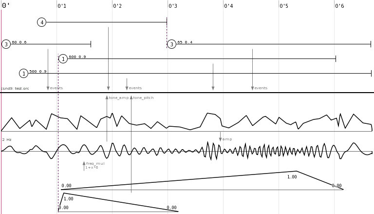
The five objects with a circled number at the top are single csound events
(cs_instr). The number in the circle is the instrument number, optional
numbers after that are extra parameters. (p4, p5, ...)
The csound event objects are connected to the events inlet on a
csound_bus which uses the test.orc orchestra file.
Below the csound bus, there is one jitter object controlling the
amplitude on a sine object, with the frequency controlled by a
linseg object through a transfer function (1+x*6).
The sine object is then connected to the tone_amp
inlet of the csound bus, as exported by the chnexport opcode in the
test.orc orchestra file.
At the bottom, another linseg is connected directly to the tone_pitch
inlet of the csound bus. This linseg is linked with one of the
single event objects at the top, shown as a dotted line.
This is a more advanced example of how nasal code can be used in the score to generate events algorithmically.
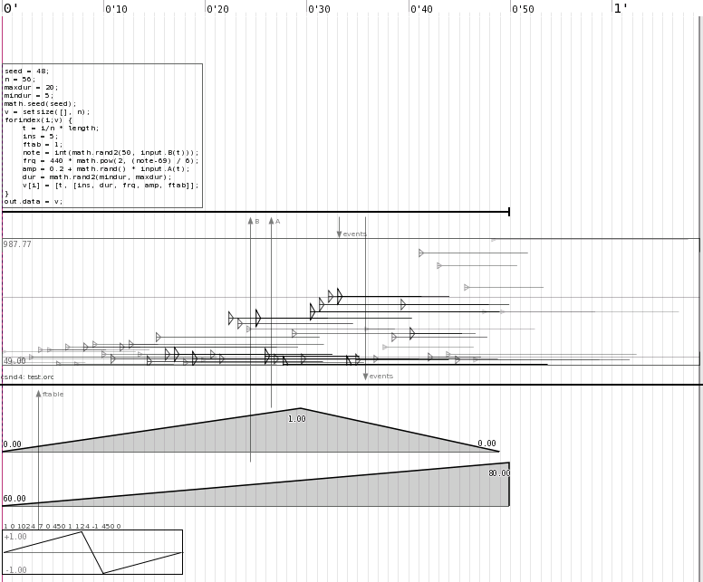
At the top is a datagen object that holds editable nasal code that generate
events. (press e on it to edit). It is connected to an evgraph object to visualize the events,
and to a csound_bus using the test.orc orchestra file for synthesis.
Two linseg objects are connected to aux inlets A and B on the
datagen object. (These inlets are created with the aux_inputs
property).
A cs_ftab object is connected to the ftable inlet on the csound bus,
and defines table 1 to be a breakpoint curve using the GEN7 routine. The csound
bus sends the generated table back to the cs_ftab object for visualization.
The code inside the datagen object first assigns some variables that
we will use later:
seed |
random seed number |
n |
number of events to generate |
maxdur |
maximum duration of events |
mindur |
minimum duration of events |
It then seeds the random generator and creates a vector v with size n.
The forindex loop iterates through the vector (n times), and sets some
variables to be used to build the event. Some of them are randomized, and some
also takes input from the A and B aux inlets to control the maximum
of the generated events amplitude and pitch.
The following variables are automatically available to the code:
input is a table of input functions in the form INLET(t) where t is time.
length is the length of the object.
The last line in the loop puts the generated event as element i in vector
v.
When the loop is finished, the vector v is put in out.data
which is the place where generated events should be stored.
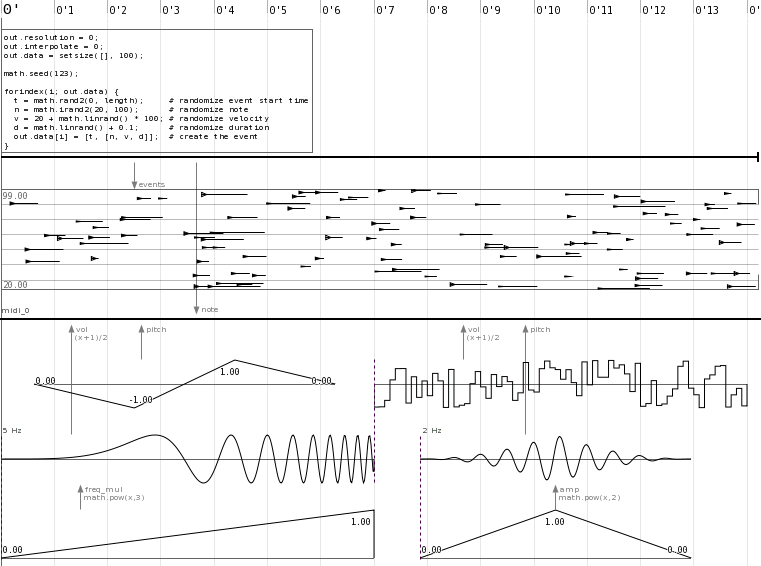
This is a demonstration of the MIDI bus, in this example note events are
generated with a datagen object and a couple of curve objects makes control
change events.
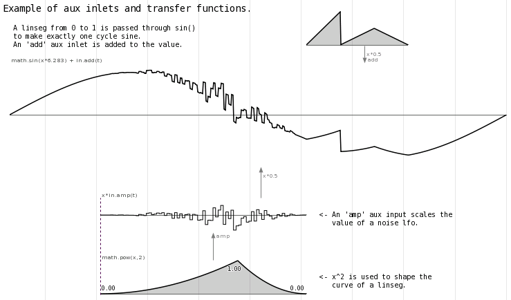
Demonstrating the flexible power of aux inlets and transfer functions.
Compiling AlgoScore on OS X should be easy as long as you have the necessary dependencies installed.
The instructions below should create a universal binary (running on both
PPC and Intel). To make a non-universal
binary, ignore the +universal flags to port install and comment out
the set (CMAKE_OSX_ARCHITECTURES ppc;i386 ) line in src/CMakeLists.txt.
Except for the already mentioned run-time dependencies you need to install the following packages, needed for the build process:
If you already have an old MacPorts installed, please run
sudo port selfupdate now.
Open a terminal and do:
sudo port install cmake sudo port install liblo +universal sudo port install libsndfile +universal sudo port install gtk2 +quartz +no_x11 +universal
Note that gtk2 may take a couple of hours to compile!
If the port command could not be found, it might be because
some versions of MacPorts fails to set up your shell variables, try this in a Terminal
to fix it:
curl -Lo postflight http://tinyurl.com/2qqbth && bash postflight
Then restart Terminal for the new variables to take effect.
Currently it seems that the PCRE port does not work with +universal, PCRE is not needed for AlgoScore to work so you can safely ignore this.
ATK might not build with +universal, if not then add these lines to the ATK portfile at /opt/local/var/macports/sources/rsync.macports.org/release/ports/devel/atk/Portfile
platform darwin 8 {
configure.env-append MACOSX_DEPLOYMENT_TARGET=10.4
build.env-append MACOSX_DEPLOYMENT_TARGET=10.4
}
and try again...
CsoundLib needs to be made universal if building a universal AlgoScore.
CsoundLib.pkg/Contents/Archive.pax.gz instead of
finding another machine or installing a package for the wrong platform on your own machine.
CsoundLib.1 and the other one CsoundLib.2
$ sudo lipo -create CsoundLib.1 CsoundLib.2 -output CsoundLib
$ cd /Library/Frameworks/CsoundLib.framework/Versions/Current/ $ file CsoundLib CsoundLib: Mach-O universal binary with 2 architectures CsoundLib (for architecture i386): Mach-O dynamically linked shared library i386 CsoundLib (for architecture ppc): Mach-O dynamically linked shared library ppc
$ ln -sf /opt/local/lib/libsndfile.1.0.17.dylib /usr/local/lib/libsndfile.1.0.17.dylib
Now enter the unpacked AlgoScore folder and build it:
cd AlgoScore/src source setup_osx_env.sh ./make_build
There will be a couple of warnings regarding architecture mismatch, ignore these as long as it all
ends with a line saying [100%] Built target algoscore...
If you want to make a clean rebuild, remove the old build folder first.
If the build succeeded without errors you should be able to test AlgoScore:
cd AlgoScore ./algoscore
If you were able to run the resulting binary, you probably want to create a stand-alone clickable application bundle so that you don't need to bother with the Terminal:
cd AlgoScore/src/macosx ./make_app
The resulting package should show up as AlgoScore/src/macosx/AlgoScore.app,
which you can move to some good place and put in your dock.
Note that all dependencies except the already mentioned run-time dependencies gets embedded in the AlgoScore.app application bundle and does not need to be installed for the AlgoScore.app to run.
This section contains short descriptions of various software related to building or running AlgoScore. The descriptions below are based on each projects own wordings from their websites.
Nasal is an embeddable scripting language, with features like dynamic typing, garbage collection, and a small footprint. The syntax is similar to C and JavaScript, and is easy to learn.
Most of AlgoScore is written in Nasal, and it has a built-in Nasal interpreter with bindings to GTK, Cairo, Csound, and more.
More information and documentation: http://plausible.org/nasal
JACK Audio Connection Kit is a low-latency audio server, written for POSIX conformant operating systems such as GNU/Linux and Apple's OS X. It can connect a number of different applications to an audio device, as well as allowing them to share audio between themselves. Recent versions also supports MIDI.
AlgoScore uses JACK to play audio and MIDI.
More information and downloads: http://jackaudio.org
Csound is a sound design, music synthesis and signal processing system, providing facilities for composition and performance over a wide range of platforms. It is not restricted to any style of music, having been used for many years in the creation of classical, pop, techno, ambient, experimental, and (of course) computer music, as well as music for film and television.
More information and downloads: http://csounds.com
Libsndfile is a C library for reading and writing files containing sampled sound (such as MS Windows WAV and the Apple/SGI AIFF format) through one standard library interface.
More information and downloads: http://www.mega-nerd.com/libsndfile
ROX is a fast, user friendly desktop which makes extensive use of drag-and-drop. The interface revolves around the file manager, or filer, following the traditional Unix view that "everything is a file" rather than trying to hide the filesystem beneath start menus, wizards, or druids. The aim is to make a system that is well designed and clearly presented.
AlgoScore does not depend on ROX in any way, but the source package ships with an AppRun script that makes it easy to start AlgoScore under ROX.
More information and downloads: http://rox.sf.net
GTK+ is a highly usable, feature rich toolkit for creating graphical user interfaces which boasts cross platform compatibility and an easy to use API.
More information and downloads: http://gtk.org
Xcode is Apple's premiere development environment for Mac OS X. It includes the powerful GCC compiler and other tools needed for building applications from source.
In addition to being packaged on the DVD with every copy of Mac OS X, the latest Xcode can be downloaded at Apple's developer website.
See http://developer.apple.com/tools/xcode for more information.
The MacPorts Project is an open-source community initiative to design an easy-to-use system for compiling, installing, and upgrading either command-line, X11 or Aqua based open-source software on the Mac OS X operating system.
More information and downloads: http://www.macports.org
CMake is a cross-platform, open-source build system. It is used to control the software compilation process using simple platform and compiler independent configuration files. CMake generates native makefiles and workspaces that can be used in the compiler environment of your choice.
More information and downloads: http://www.cmake.org